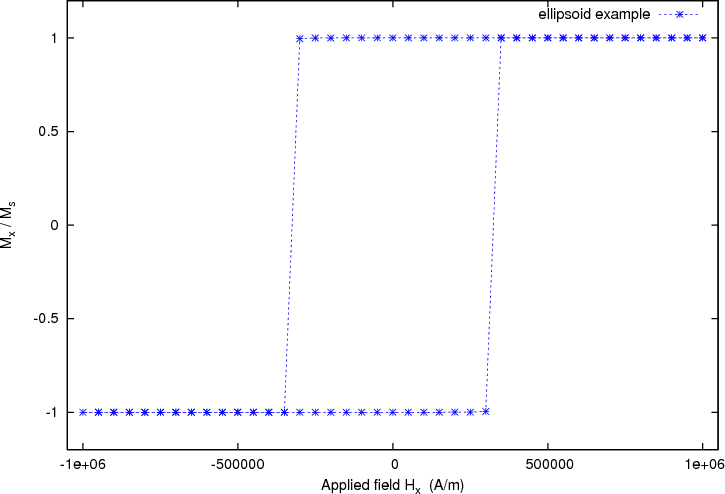

This example computes the hysteresis loop of an ellipsoidal magnetic object. We use an ellipsoid whose x,y,z semi-axes have lengths 30 nm, 10 nm and 10 nm, respectively. (The mesh is contained in ellipsoid.nmesh.h5 and produced with Netgen from ellipsoid.geo):
This picture has been obtained by converting the mesh to a vtk file using:
$ nmeshpp --vtk ellipsoid.nmesh.h5 mesh.vtk
and subsequent visualisation with MayaVi:
$ mayavi -d mesh.vtk -m SurfaceMap
We have further added the axes within MayaVi (Visualize->Modules->Axes), and changed the display color from blue to red (Double click on SurfaceMap in the selected Modules list, then uncheck the Scalar Coloring box, click on Change Object Color and select a suitable color).
We provide the mayavi file mesh.mv that shows the visulisation as in the figure above. (If you want to load this file into MayaVi, just use $ mayavi mesh.mv but make sure that mesh.vtk is in the same directory as mayavi will need to read this.)
To compute the hysteresis loop for the ellipsoid, we use the script ellipsoid.py:
import nmag
from nmag import SI, at
#create simulation object
sim = nmag.Simulation()
# define magnetic material
Py = nmag.MagMaterial(name="Py",
Ms=SI(1e6,"A/m"),
exchange_coupling=SI(13.0e-12, "J/m"))
# load mesh: the mesh dimensions are scaled by 0.5 nm
sim.load_mesh("ellipsoid.nmesh.h5",
[("ellipsoid", Py)],
unit_length=SI(1e-9,"m"))
# set initial magnetisation
sim.set_m([1.,0.,0.])
Hs = nmag.vector_set(direction=[1.,0.01,0],
norm_list=[ 1.00, 0.95, [], -1.00,
-0.95, -0.90, [], 1.00],
units=1e6*SI('A/m'))
# loop over the applied fields Hs
sim.hysteresis(Hs, save=[('restart','fields', at('convergence'))])
As in the previous examples, we first need to import the modules necessary for the simulation. at('convergence') allows us to save the fields and the averages whenever convergence is reached. We then define the material of the magnetic object, load the mesh and set the initial configuration of the magnetisation as well as the external field.
We apply the external magnetic fields in the x-direction with range of 1e6 A/m down to -1e6 A/m in steps of 0.05e6 A/m.
To convey this information efficiently to nmag, we use:
Putting all this together, we obtain this command:
Hs = nmag.vector_set(direction=[1., 0.01, 0],
norm_list=[ 1.00, 0.95, [], -1.00,
-0.95, -0.90, [], 1.00],
units=1e6*SI('A/m'))
which computes a list of vectors Hs. Each entry in the list corresponds to one applied field.
The hysteresis command takes this list of applied fields Hs as one input parameter, and computes the hysteresis loop for these fields:
sim.hysteresis(Hs, save=[('restart', 'fields', at('convergence'))])
The save parameter is used to tell the hysteresis command what data to save, and how often. We have come across this notation when explaining the relax command in the section “Relaxing” the system of the previous example. In the example shown here, we request that the fields and the restart data should be saved at the point in time where we reach convergence. (The spatially averaged data is saved automatically to the Data files (.ndt) file when the fields are saved.) This is done in a compact notation shown above which is equivalent to this more explicit version:
sim.hysteresis(Hs,
save=[('restart', at('convergence')),
('fields', at('convergence'))])
The compact notation can be used because here we want to save fields and restart data at the same time.
The hysteresis command computes the time development of the system for one applied field until a convergence criterion is met. It then proceeds to the next external field value provided in Hs.
We run the simulation as usual using:
$ nsim ellipsoid.py
If you have run the simulation before, we need to use the --clean switch to enforce overriding of existing data files:
$ nsim ellipsoid.py --clean
The simulation should take only a few minutes (for example 3 minutes on an Athlon64 3800+), and needs about 75MB of RAM.
If the simulation has been interrupted, it can be continued using
$ nsim ellipsoid.py –restart
Once the calculation has finished, we can plot the graph of the magnetisation (projected along the direction of the applied field) as a function of the applied field.
We use the ncol command to extract the data into a text file named plot.dat:
$ ncol ellipsoid H_ext_0 m_Py_0 > plot.dat
In this example, rather than using xmgrace, we show how to plot data using Gnuplot:
$ gnuplot make_plot.gnu
The contents of the gnuplot script make_plot.gnu are:
set term postscript eps enhanced color set out ‘hysteresis.eps’ set xlabel ‘Applied field H_x (A/m)’ set ylabel ‘M_x / M_s’ set xrange [-1050000:1050000] set yrange [-1.2:1.2] plot ‘plot.dat’ u 1:2 ti ‘ellipsoid example’ w lp 3
which generates the following hysteresis loop graph:
